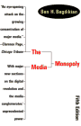

Image over Substance
By Steve Hoenisch
Copyright 1996-2025 Steve Hoenisch
www.Criticism.Com
Max Horkheimer and Theodor Adorno, commenting on Hitler’s propagandistic use of the radio, note “the gigantic fact that the speech that penetrates everywhere replaces its content,”1 a formula that has been taken one step further by television: On TV, the image dominates, overpowering not only the fact of speech but also its content.
In his book [Breaking the News: How the Media Undermine American Democracy], James Fallows shows how TV images smother speech with an anecdote about a CBS reporter doing a story on President Ronald Reagan in 1984. The reporter had documented the contradiction between what Reagan said and what he did by showing him speaking at the Special Olympics and at a nursing home while reporting that Reagan had cut funding to children with disabilities and opposed funding for public health. After Stahl’s piece was broadcast, she got a call from a White House official, who praised her. Surprised by the compliments, She asked the White House official why he wasn’t upset, pointing out that her piece had nailed the president. The official replied:
“You television people still don’t get it. No one heard what you said. Don’t you people realize that the picture is all that counts. A powerful picture drowns out the words.”2
Perhaps this statement marks the dawn of postmodern politics in America. With it, postmodernism has moved

beyond the realm of the media and into the sphere of politics, at least as viewed through the lens of the press. According to Fallows, reporters’ “experience of recent politics, as they understand it, is of being endlessly manipulated and ‘spun’ by politicians who care about appearance rather than substance, and who win elections by concealing their substantive views.”3The effect of this view of politicians and politics, whether accurate or not, shifts viewers’ attitudes from seeking substantive information, arguments, and analyses about political issues to becoming “sneering and supercilious” about politics.4
Max Horkheimer and Theodor W. Adorno, Dialectic of Enlightenment, trans. John Cumming (New York: Continuum, 1995), p. 159.
James Fallows, Breaking the News: How the Media Undermine American Democracy (New York: Pantheon, 1996), p. 62.
Ibid. p. 63.
Ibid. p. 63.